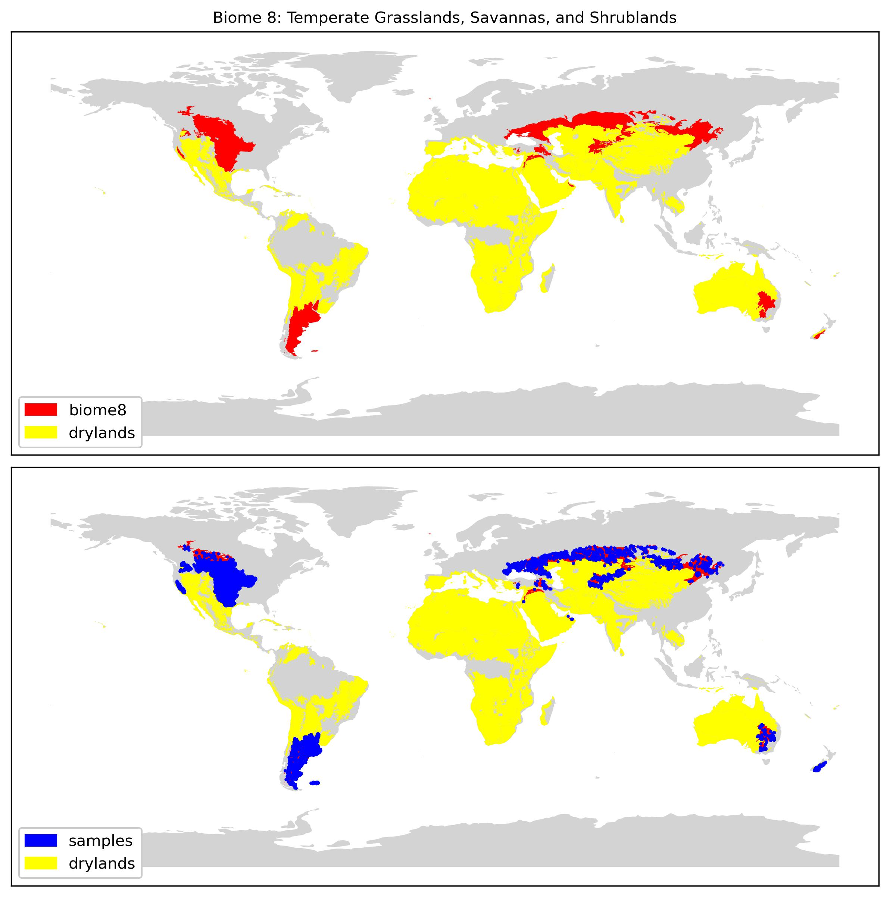
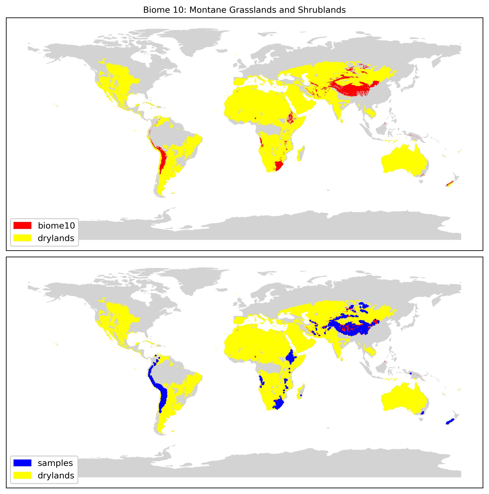
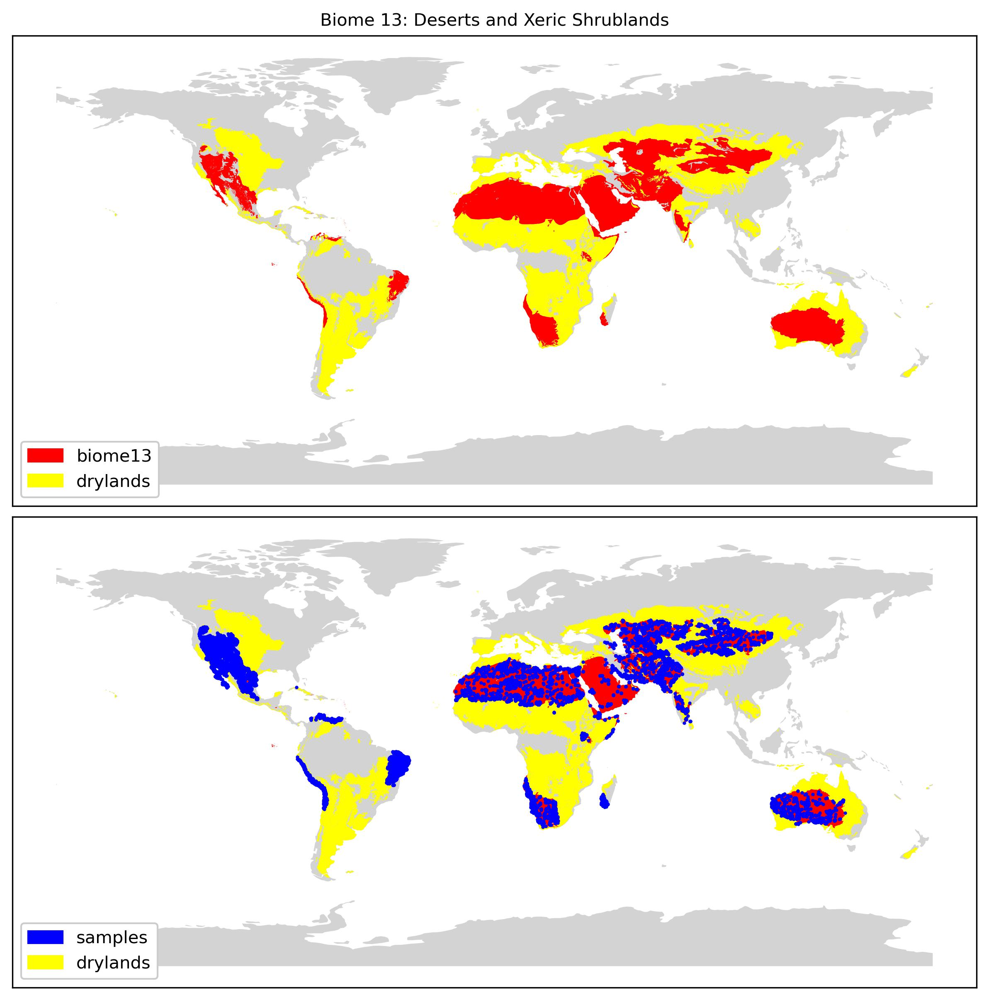

AI for Landcover Classification in Drylands
Biomes and Sample Locations
Labelled landcover samples were taken from Stanimirova et al. (2023). The landcover samples were then filtered by dryland biome (Terrestrial Ecoregions of the World, Olson et al. 2001):
Biome 2. Tropical and Subtropical Dry Broadleaf Forests. 29,023 samples.Biome 7. Tropical and Subtropical Grasslands, Savannas, and Shrublands. 218,249 samples.
Biome 8. Temparate Grasslands, Savannas, and Shrublands. 22,599 samples.
Biome 10. Montane Grasslands and Shrublands. 24494 samples.
Biome 12. Mediterranean Forests, Woodlands, and Scrub 27,006.
Biome 13. Deserts and Xeric Shrublands 26,628 samples.




